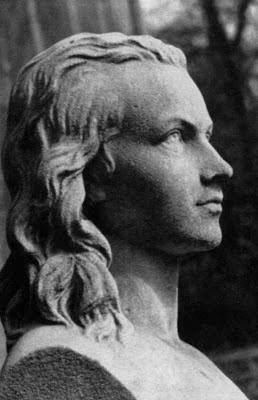

|
` 
“Gloria a la Reina del mundo,
a la gran anunciadora de Universos sagrados,
a la tuteladora del Amor dichoso
–ella te envía hacia mí, tierna amada, dulce y
amable Sol de la Noche–
ahora permanezco despierto
–porque soy Tuyo y soy Mío
tú me has anunciado la Noche: ella es ahora mi vida
–tú me has hecho hombre–
que el ardor del espíritu devore mi cuerpo,
que, convertido en aire, me una y me disuelva contigo íntimamente
y así va a ser eterna nuestra Noche de bodas.”
(Himnos a la Noche)
Novalis, apodo que significa “el que construye el nuevo país”, bien pudiera haberse convertido en el Imperator de la vida espiritual de Alemania tal y como había considerado Goethe. Poeta, filósofo e ingeniero de finales del siglo XVIII, murió a los 29 años siendo apenas conocido fuera del círculo romántico. Su nombre y su obra no se perdió gracias a Tieck y Schlegel, que tras su muerte se dedicaron a publicar algunas de sus obras y a promover su filosofía por Europa.
Gracias a ellos pronto se convertiría en una figura mítica. Los que le habían conocido de cerca ya le percibieron como un mago o fundador religioso. Escribe Schlegel sobre su apariencia física: “su cara es más alargada y, en cierto modo, se eleva sobre el ámbito de lo terrenal, como la novia de Corinto, tiene por completo los ojos de un vidente, y éstos miran al frente, descoloridos.”
Novalis se había propuesto escribir el mito romántico para sus compatriotas. Creía que la realidad es tan fantástica que solo se puede captar a través de un elevado espíritu poético. Y con el mito y la poesía podría reescribir la evolución histórica de su tierra y de Europa desde los principios de la Edad Dorada.
Creció al lado de su tío Gottlob Friedrich von Handenberg, que era comendador de la orden de los caballeros teutones. Este quiso distraerle de las letras pero no lo consiguió. De su devoto padre aprendió a seguir la inspiración del “corazón”. Y de esa manera nunca abandonó su gran vocación, la poesía.
Asistió en Jena a las lecciones de Schiller y le acompañó hasta su lecho de muerte.
Después de estudiar Derecho por deseo expreso del padre, pasará una época distendida de la que querrá reconducirse. Se sentirá atraído por la carrera militar no solo por alcanzar la disciplina perdida sino también por el encanto del la mística de la guerra que parecía ser el mejor camino para lograr convertirse en un héroe redimido.
Al poco conoce a Sophie von Kühn, el gran amor de su vida. Adopta fiel y apasionadamente el Romanticismo como auténtico estilo de vida. En su euforia como enamorado siente que puede experimentar el punto de vista trascendental. No ya solo pensarlo, sino vivirlo. Siente lo divino que hay en él y se centra en conquistar su mismidad trascendental:ser a la vez el yo de su yo. Aquel que es "yo de su yo" puede entregarse a los sentimientos y observarlos a la vez, mirando a la amada en la distancia. El enamoramiento le permite crear ficciones, pero éstas no tienen un sesgo negativo como lo entenderíamos ahora. Para él la ficción no significa ilusión o autoengaño, sino la fuerza viva de la imaginación. Esta “imaginación productiva” intensifica el sentimiento vital. Y por tanto se produce una nueva realidad. Así es como podemos transformarnos e incrementarnos (potenciarnos, mejorarnos) a nosotros mismos y a los demás. Eso es romantizar.
Todo lo material puede transformarse en signo, en una expresión de lo espiritual. Todo acto vital debe modificarse y enfocarse a la mejora para ir elevándose y conquistar definitivamente la existencia.
La amada muere tras dos años de compromiso y él, mientras guarda el luto estudia ciencias para poder desempeñar su labor en las minas de sal. Se apoya en la Filosofía de la Naturaleza para consolarse y formar parte de las fuerzas creadoras de la naturaleza que a veces se muestran monstruosas. Werner, defensor del neptunismo (todo proviene del agua) fue un maestro que influyó bastante en él.
Werner era una especie de guía del camino en el proceso espiritual a la vez que científico serio y renombrado. Conseguía que sus lecciones se convirtieran en asombrosas iniciaciones a los misterios más profundos de la naturaleza. Ritter también le influyó. Había hecho de la física una mística y una ciencia esotérica. La tradición mística de la que se empapó Novalis iba desde los Eléatas hasta el maestro Eckhart, precisamente por esa búsqueda de la unión con el Todo.
“El camino misterioso va hacia dentro”.
Novalis quiere comprender a la naturaleza igual que se comprende al ser amado. Esta erótica del contacto con la naturaleza abre las puertas de lo imposible. Siguiendo la línea de Schopenhauer ve que el hombre que se experimenta a sí mismo puede conectar con la dimensión interna del mundo.
El hombre es capaz entonces de captar lo que está fuera de él, a través de la “intuición intelectual” y entrar en éxtasis ayudado por la poesía. El sujeto sale de sí mismo y se proyecta activamente sobre el objeto de conocimiento.
Pero en realidad llevamos al universo dentro de nosotros. Hay que entender la naturaleza desde las fuerzas oscuras, instintivas y creadoras, fuerzas que han sido ignoradas y temidas por la sociedad durante siglos. Novalis dió el nombre de “voluntad” a esas fuerzas no denominadas aún.
Esta capacidad de transformar las cosas se relaciona con el término “mágico”. “Cada hombre vive en su voluntad.” Esta voluntad tiene un componente mágico de gran fuerza. Llamará a este pensamiento “idealismo mágico” .La magia es el poder de actuar sobre las cosas a voluntad del mago; en el caso del poeta es el poder de imponer la idea, el espíritu sobre la materia y así espiritualizar el mundo. El principio del idealismo mágico es: “Hacer de las cosas ideas y de las ideas cosas.”
Novalis creía que de esta nueva perspectiva filosófico-estética se aprenderían grandes cosas: “por primera vez así conseguiremos verdaderas explicaciones sobre el cuerpo, el alma, el mundo, la vida, la muerte y el reino de los espíritus.”
Tras la muerte de su amada puso en práctica su “idealismo mágico” apoyándose en la fuerza y la magia de su voluntad. Buscaba la muerte en el plazo de un año pensando en que ésta le transformaría y le llevaría a una vida superior. En el dolor por su pérdida siente la llamada del mundo invisible. Se considera a sí mismo como un fugaz huésped del “Reino de la Luz”. Es el egregio extranjero que siempre aparece en sus novelas.
Con el paso del tiempo, los planes para la muerte palidecen y vuelve a prometerse en matrimonio. Estudia mineralogía y se siente atraído por ese mundo subterráneo y nocturno. Sus Himnos a la Noche se convierten en el prototipo del enamorado de la muerte y del romántico misticismo. Sophie, además de su amada es su guía espiritual, la que le conduce a la verdadera Iniciación.
Novalis conseguirá liberarse del miedo a la noche y lo que ésta simboliza: muerte, absurdo, ausencia, vacío… Entiende al fin que el amor triunfa sobre todas esas cosas, sobre cualquier tipo de negación que comporte el mundo. La noche es la gran aliada porque trae la gran transformación y el origen de todo, porque de ella brota el ser; ella es por tanto conocimiento infinito.
El mundo de los sueños es el oráculo de la noche, que manifiestan la realidad invisible y la conciencia superior. Novalis extraía de los sueños enseñanzas sobre la naturaleza del mundo y del hombre. Tienen según él poderes proféticos porque provienen del Alma del Mundo. Este planteamiento le sirve a su vez para criticar la cínica razón de los ilustrados. Para Novalis los verdaderos "locos" son los ilustrados no los hijos de la noche que beben de la luz oscura y no de la luz clara de la razón diurna. Mientras la ilusión de la luz diurna parece mostrar claras las coordenadas del tiempo y el espacio, la luz nocturna supera tales nociones humanas que sólo sirven para establecer cómodos límites a la mente y a la vida.
Gracias a la poesía el pensamiento se convierte en devoción. De lo que se trata es de conservar el sentido de lo sagrado y de lo inmortal.
Novalis denuncia que el mundo está perdiendo ese sentido. Europa necesita ser renacida tras el terror de Napoleón a través de la espiritualidad. “Allí donde no hay dioses, acechan los fantasmas”. Novalis está cansado del nacionalismo, del egoísmo y del poder político. El espíritu de su época es el del desencanto que reina gracias al desamparo metafísico. El sentido infantil de lo asombroso se ha perdido por el saber y el tener del adulto. Todo se mueve en torno a la utilidad y no hay espacio para la consideración del mundo interior.
A Novalis no le basta el método kantiano de anteponer a la ley natural la ley moral como realidad metafísica dentro de uno mismo. El quiere superar ese dualismo que tantos años lleva sacudiendo a los filósofos. Por ello moviliza la fantasía como motor central de comprensión y formación del mundo. Con lo cual funda la religión de lo estético.
Para la nueva religión poética no se necesita creer en Cristo. (El cristianismo de Novalis es bastante sincrético ya que incluye la figura gnóstica de la diosa Sofía y algunos matices paganos) Solo se necesita un mediador que nos una a la divinidad. La poesía representa ese anhelo de unión con lo Otro. La esfera del mediador no es sino el misterio que se hace visible y que a la vez persiste como misterio. Todo puede ser un mediador que nos ayude a mirar a lo monstruoso, a la Noche y al Todo. Si la conciencia se cierra a esta posibilidad, a esta nueva realidad, solo obtendremos ignorancia, limitación y desencanto.
Hay que alcanzar la suprema sabiduría a través de la síntesis de los opuestos que se disuelven en la Unidad. La unión entre sujeto y objeto es anterior a todo conocimiento. Y ahí está la clave, no se puede retornar a la Unidad sin partir de ella.
|
 RSS
RSS